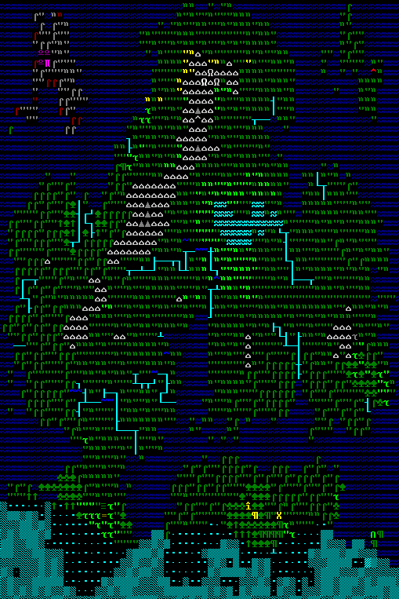

Créer son monde
 Vous avez téléchargé le jeu mais vous vous trouvez en face d'un menu comme celui-ci.
Et oui, avant de pouvoir jouer, vous devrez d'abord créer le monde dans lequel vous vous trouverez.
Vous avez téléchargé le jeu mais vous vous trouvez en face d'un menu comme celui-ci.
Et oui, avant de pouvoir jouer, vous devrez d'abord créer le monde dans lequel vous vous trouverez.
Vous pourrez même généré d'autres mondes après celui-ci. Vous n'êtes pas obligé de vous cantonner à un seul monde.
Pour créer un nouveau monde, il vous suffit de sélectionner l'option New World.
Il est très facile de créer un monde mais il est moins aisé de comprendre ce qu'on est vraiment de faire quand on le crée.

Option de création

Et oui, avant de générer votre monde, il va falloir choisir quelques options autour desquelles la génération du monde.
Nous avons les options suivantes:
- World Size
- History
- Number of Civilization
- Number of Beast
- Natural Savagery
- Mineral Occurence
World Size
Ce paramètre gérera la taille du monde.
En effet, vous pourrez très bien créer des mondes immenses ou bien minuscules.
History
Ce paramètre génèrera l'histoire de votre monde. Vous pourrez choisir de commencer vos aventures avec un monde neuf ou bien dans un monde qui a une longue histoire derrière lui.
Number of Civilization
Ce paramètre vous permettra de choisir le nombre de ville, village,... qui se trouveront sur votre monde.
Number of Beast
Ce paramètre est le nombre de bêtes mythique qui parcourent votre monde (dragon, titan,...). Plus vous en mettrez plus vous risquerez d'en croiser.
Natural Savagery
Ce paramètre sert à choisir le nombre de bête "normale" qui risque de vous attaquer lors de vos aventures.
Mineral Occurence
Ici, nous gérerons les minéraux de vos mondes. Très important que ce soit pour le mode aventure ou Forteress.
En mode Forteresse, ca permettra de paramétrer la quantité de minéraux que vous trouverez dans vos sols.
En mode Aventure, ça aura un effet sur le choix des objets, armes, armures que vous pourrez obtenir dans les magasins.
Revenir en haut de la page Revenir au début de l'article